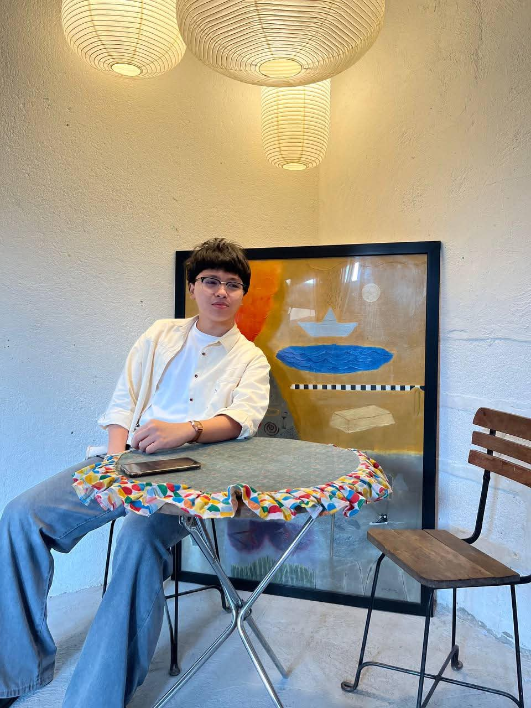
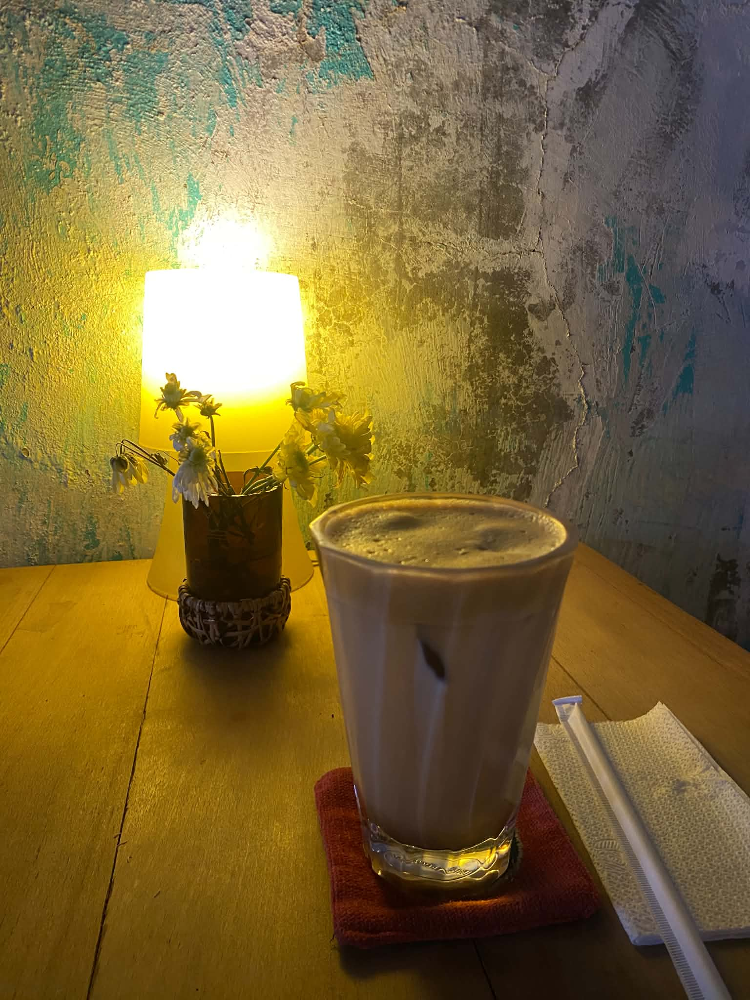
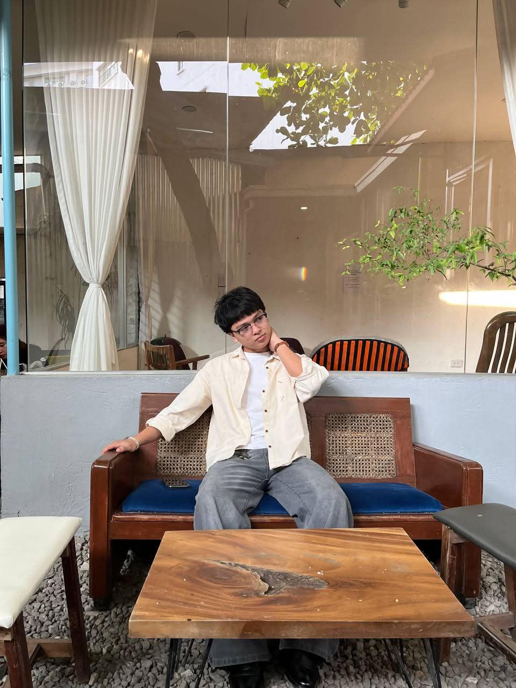

Cafe Siriusdan
492 Halcon Extension, Mandaluyong City, 1550 Kalakhang Maynila

Why I Recommend Cafe Siriusdan
When good coffee meets great comfort, Cafe Siriusdan is one of the places that stands out. Located at 492 Halcon Extension in Mandaluyong City, this cafe offers a spacious and comfortable environment that makes it a great place to relax, study, meet with friends, or simply spend some time away from the busy surroundings.
One of the things that makes Cafe Siriusdan memorable is its artistic atmosphere. The cafe features many unique art pieces and paintings that give the place a cultural yet modern feel. The artwork also provides plenty of interesting spots for taking pictures, making the cafe more than just a place to grab coffee.
Overall, Cafe Siriusdan is a place worth visiting because of its combination of food, comfort, space, and artistic design. Whether you are looking for somewhere to eat, relax, take photos, or simply experience a unique cafe atmosphere, this is definitely a place you would not want to miss.
Place Details
| Place | Cafe Siriusdan |
|---|---|
| Address | 492 Halcon Extension, Mandaluyong City, 1550 Kalakhang Maynila |
| Category | Cafe / Food & Comfort |
| Food Options | Pasta, pastries, hot meals, sweets, and drinks |
| Internet | Average Internet Connection |
| Seating | Spacious with many seating areas |
| Best For | Studying, relaxing, eating, photography, and meeting friends |
More Photos


Suggest a Place
Know a great spot near TUP? Recommend it to us!